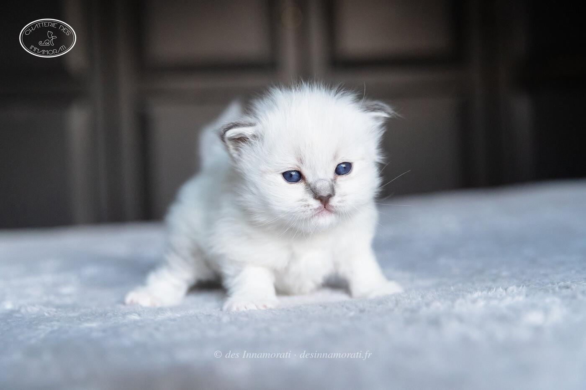

RobeMâle · Blue tabby point
Naissance12 août 2019
StatutAdopté
Album5 photos, de septembre 2019 à novembre 2020


Photos réduites et marquées. Elles appartiennent à la Chatterie des Innamorati et ne peuvent pas être reprises dans une annonce.